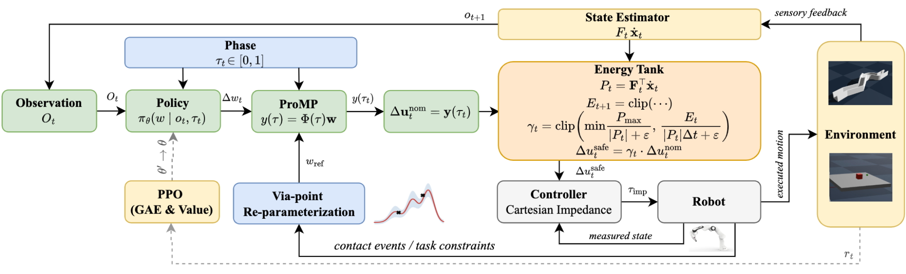

Reinforcement learning (RL) approaches based on Markov Decision Processes (MDPs) are predominantly applied in the robot joint space, often relying on limited task-specific information and partial awareness of the 3D environment. In contrast, episodic RL has demonstrated advantages over traditional MDP-based methods in terms of trajectory consistency, task awareness, and overall performance in complex robotic tasks. Moreover, traditional step-wise and episodic RL methods often neglect the contact-rich information inherent in task-space manipulation, especially considering the contact-safety and robustness. In this work, contact-rich manipulation tasks are tackled using a task-space, energy-safe framework, where reliable and safe task-space trajectories are generated through the combination of Proximal Policy Optimization (PPO) and movement primitives. Furthermore, an energy-aware Cartesian Impedance Controller objective is incorporated within the proposed framework to ensure safe interactions between the robot and the environment. Our experimental results demonstrate that the proposed framework outperforms existing methods in handling tasks on various types of surfaces in 3D environments, achieving high success rates as well as smooth trajectories and energy-safe interactions.
PPT (ProMP_PPO_Energy_Tank): Observations and a phase variable are fed to the policy, which outputs residual ProMP weights. These are combined with via-point conditioned reference weights to form a ProMP trajectory. An energy-tank layer scales the command to ensure safe execution, which a Cartesian impedance controller tracks and converts to joint torques. Interaction feedback informs via-point reparameterization. PPO updates the policy using GAE and a value critic (dashed arrow).
